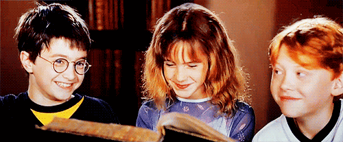
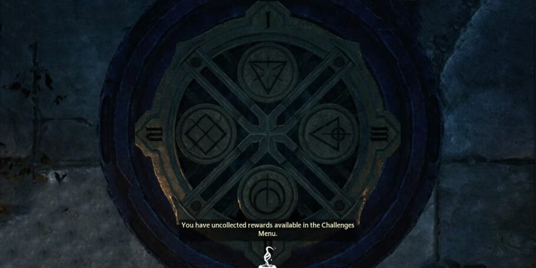
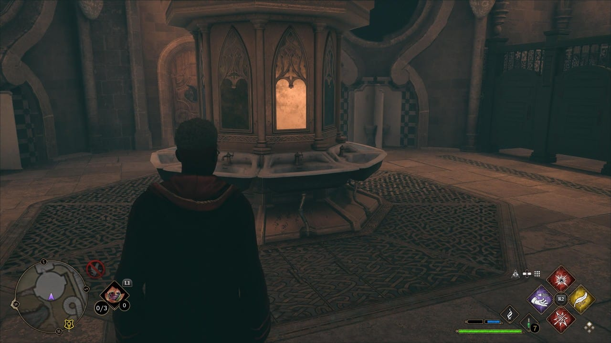
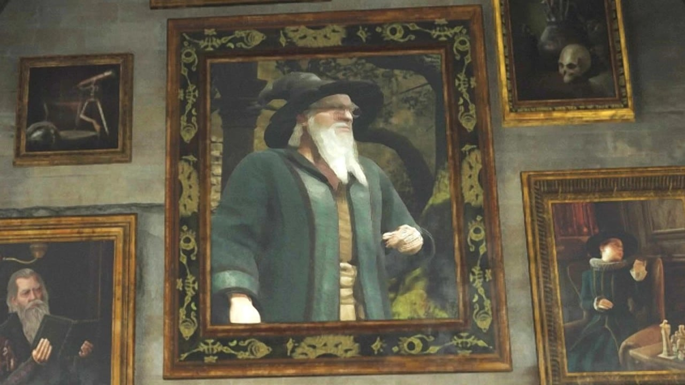

A Warner anunciou hoje, dia 12, a produção de uma série de Harry Potter para o streaming Max. A nova produção será uma adaptação dos sete livros originais, com um novo elenco, e a autora J.K. Rowling servirá como produtora executiva. De acordo com o The Wrap, a série se desenvolverá "por uma década". Ainda não há detalhes de previsão de lançamento ou nomes de equipe além de Rowling, mas especula-se que David Heyman, produtor da saga nos cinemas, esteja envolvido nos bastidores, série de Harry Potter na Max ainda não tem previsão de estreia. Fique ligado no hogwarts.net para mais novidades da produção.

Hogwarts Legacy ultrapassou a marca de 22 milhões de cópias vendidas em 2023, revelou o presidente da Warner Bros. Interactive Entertainment, David Haddad, em entrevista com a revista Variety. O executivo também afirmou que ele foi "o jogo mais vendido do ano por toda a indústria ao redor do mundo", o que corrobora análises de analistas e firmas do mercado de games que indicam que Hogwarts Legacy ficou no topo das listas de vendas de países como EUA e Reino Unido, superando jogos como Call of Duty: Modern Warfare III e EA Sports FC 24.
Segredo 1: O quebra-cabeça do incêndio na ponte do pátio O quebra-cabeça de fogo da ponte do pátio está localizado no ponto de viagem rápida Viaduct Courtyard Floo Flame em Hogwarts. Você precisará ir até a ponte e estudar o painel no chão para saber quais números correspondem a quais símbolos. Acenda as fogueiras acima dos pilares e combine o numeral romano no painel do piso com os numerais romanos acima de cada pilar.
Segredo 2: A entrada da Câmara Secreta: O segundo filme da saga de Harry Potter tem um easter egg especial. A entrada da Câmara Secreta está disponível dentro do game. Quem circula pelos corredores perto da sala da Sonserina com certeza topou com essa estrutura em algum momento do jogo.
Segredo 3: A carta de Salazar Sonserina e sua revolta: Salazar Sonserina não é muito fã dos bruxos que conseguem interagir com feitiços mas não nasceram de uma família tradicionalmente mágica, os famosos “trouxas”. Típico comportamento de Draco Malfoy contra os “sangues ruins”, para servir de referência. Em uma das cartas deixadas pelo fundador de Hogwarts, ele desabafa sobre sua discussão com Godrico, que brigou para todos terem direito de frequentar a escola:
Segredo 4: Quadro de Richard Harris, ator de Dumbledore: Dumbledore não faz parte dessa linha do tempo, no entanto, um dos segredos de Hogwarts Legacy envolve o poderoso diretor da escola. Na Torre de Corvinal, uma homenagem a Richard Harris, ator que interpretava o bruxo e acabou falecendo em 2002, é homenageado dentro do jogo.
